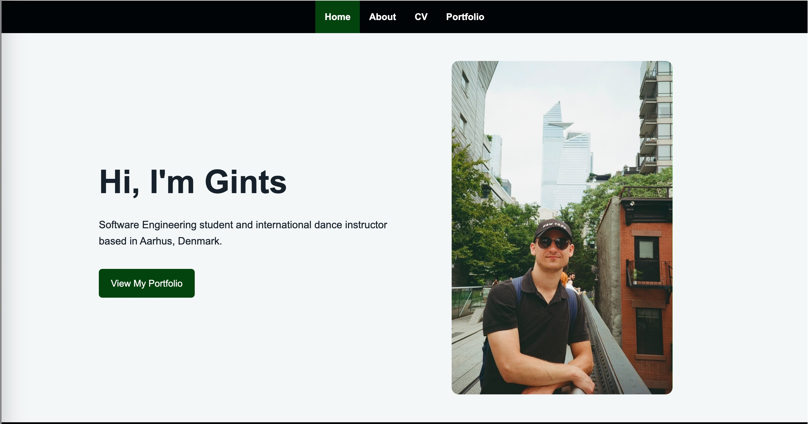

Real Project
Personal Portfolio Website
A responsive four-page website presenting my background, CV and projects. I developed it as my first individual WEB1 project without using external frameworks.
- HTML
- CSS
- Flexbox
- CSS Grid
- Media Queries